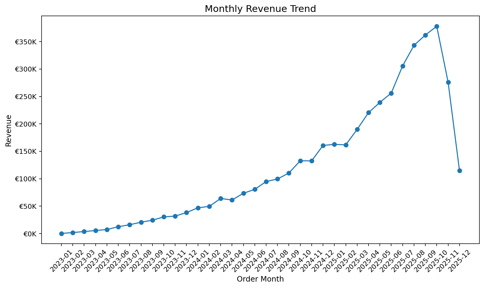
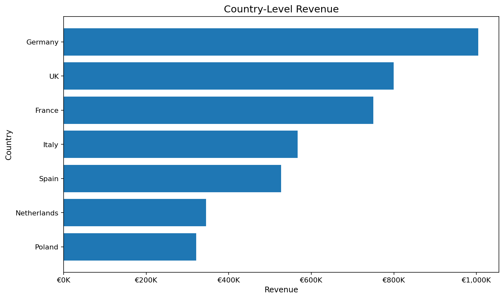
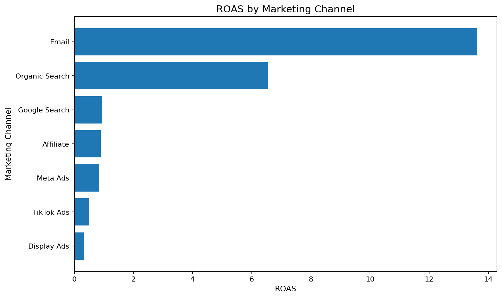
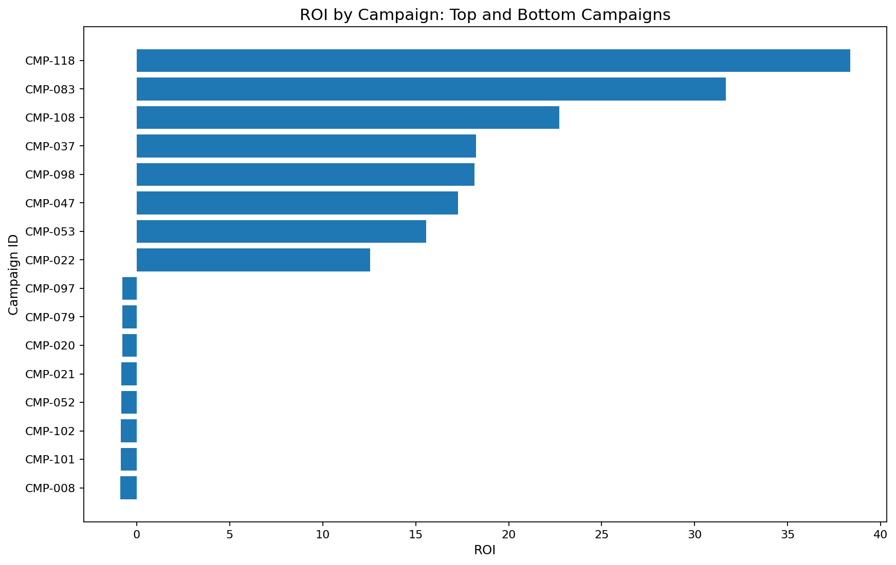
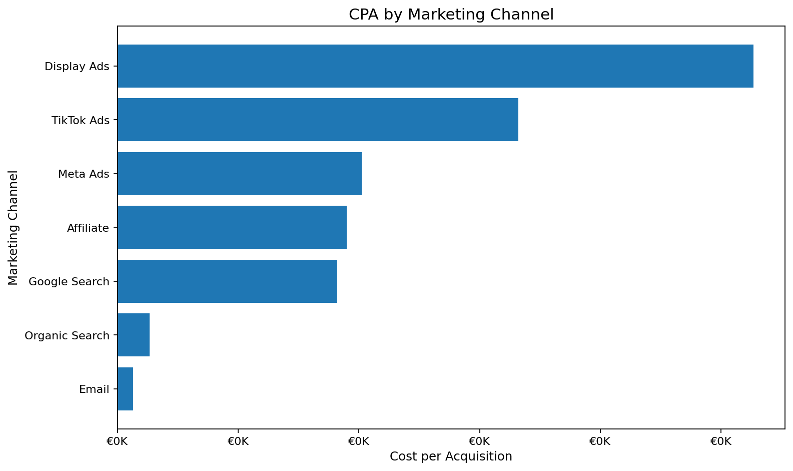
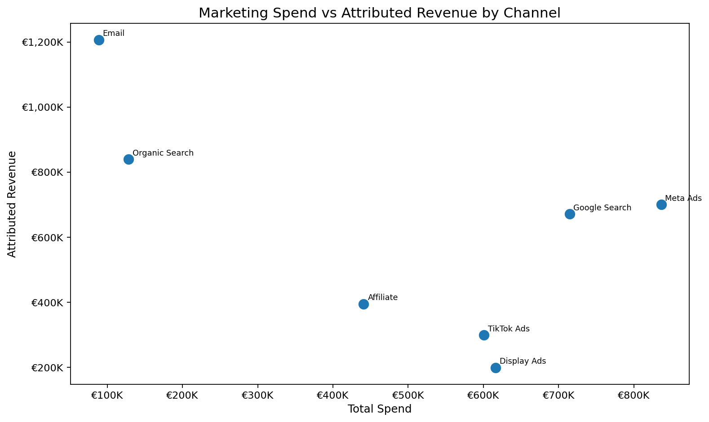
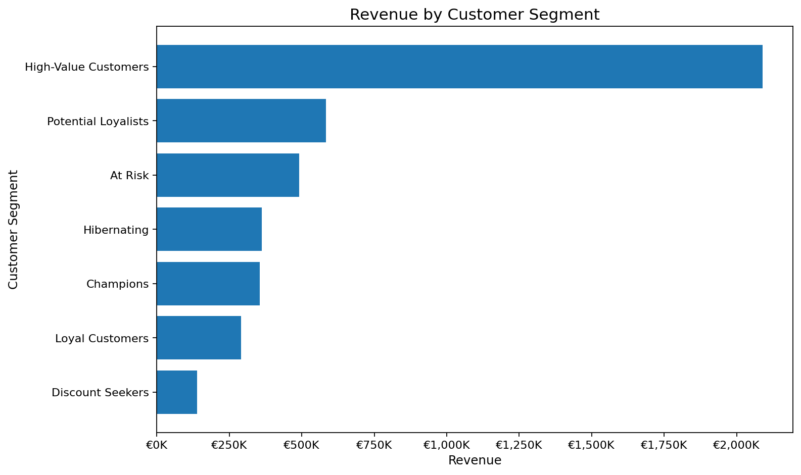
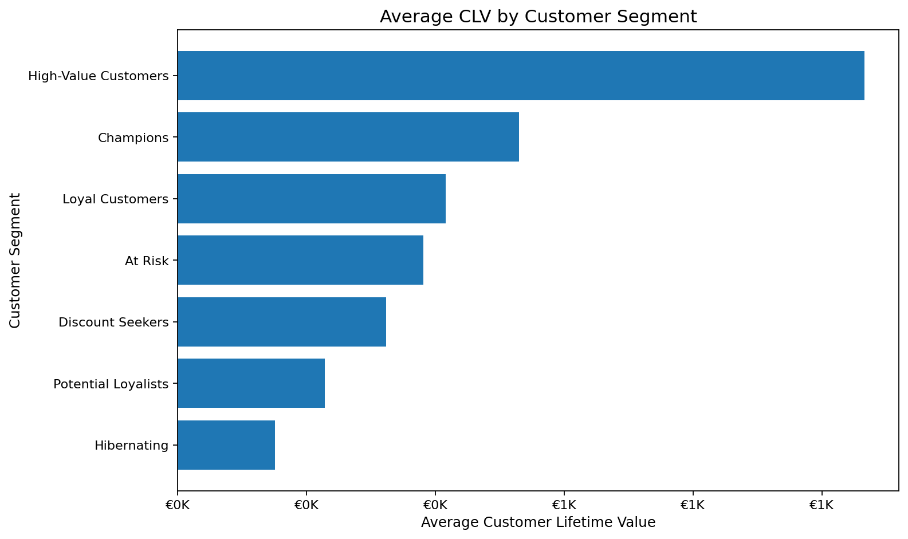
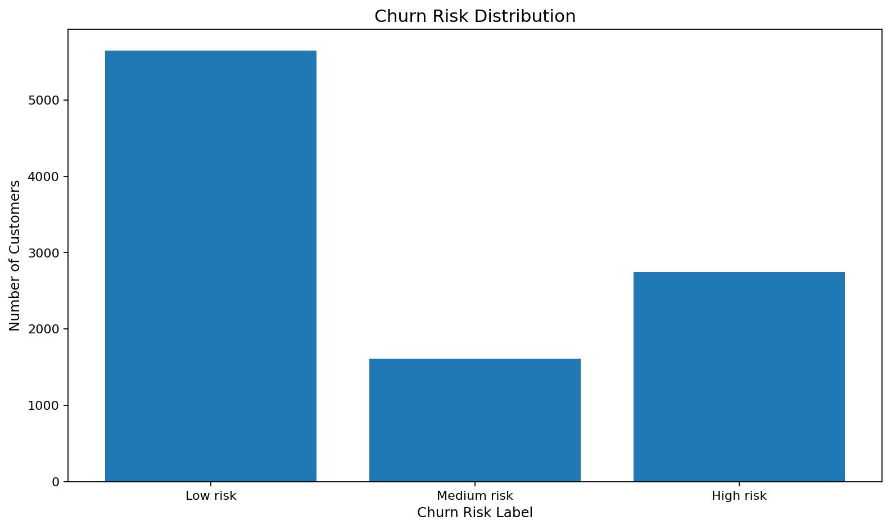
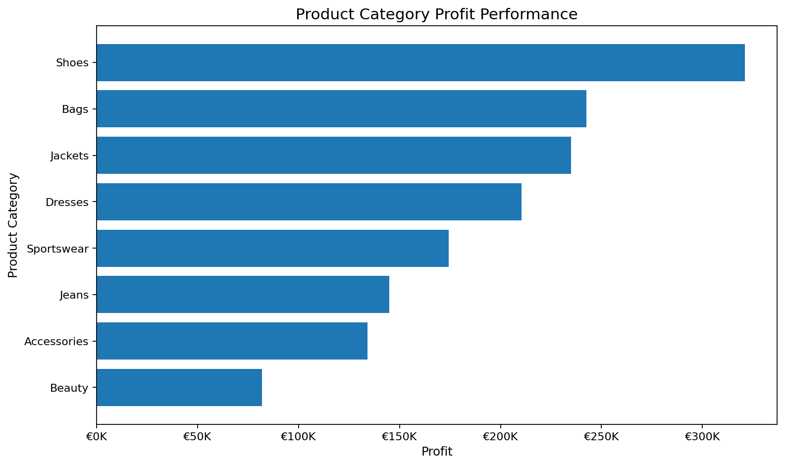

Customers
Orders
Campaigns
Marketing Channels
Executive Overview
This dashboard analyses revenue performance, marketing ROI, customer value, churn risk and budget reallocation opportunities for a fictional Zalando-style European fashion e-commerce company.
1. Monthly Revenue Trend

2. Country-Level Revenue

Marketing Performance
Marketing channels and campaigns are evaluated using ROAS, ROI, CPA, CPC, CTR, conversion quality and revenue efficiency.
3. ROAS by Marketing Channel

4. ROI by Campaign

5. CPA by Channel

6. Marketing Spend vs Revenue

Customer Segmentation
Customers were segmented using RFM logic and behavioural metrics including recency, frequency, monetary value, discount dependency and return behaviour.
7. Revenue by Customer Segment

8. CLV by Segment

9. Churn Risk Distribution

10. Product Category Performance

Business Recommendations
- Increase investment in high-ROAS channels such as Email and Organic Search.
- Reduce spend on campaigns with high CPA and weak conversion quality.
- Create retention campaigns for At-Risk and Potential Loyalist customers.
- Use personalised offers for Champions and Loyal Customers.
- Reduce excessive discounting for customers already likely to purchase.
- Improve return-rate monitoring for low-margin or high-return categories.
- Build a monthly marketing performance dashboard for leadership reporting.
Project Repository
View the complete project including Python scripts, SQL queries, processed datasets, reports and dashboard blueprint.